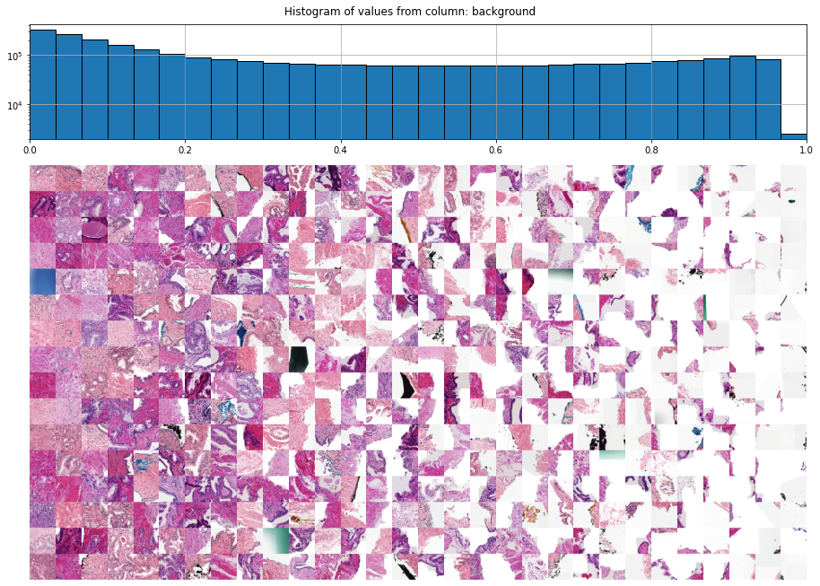
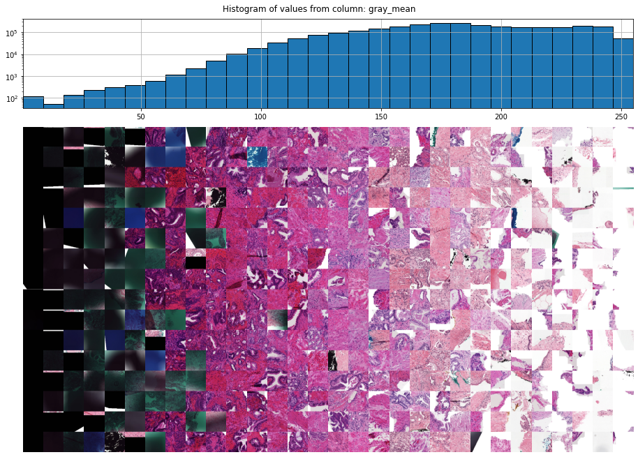
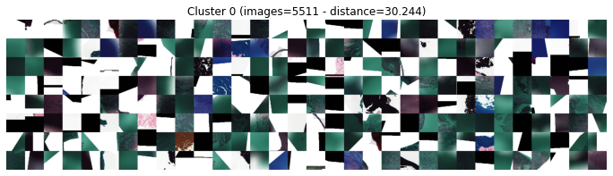
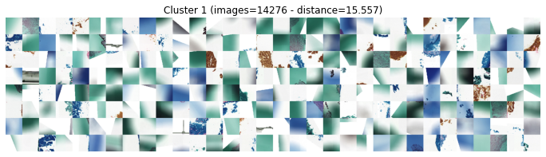
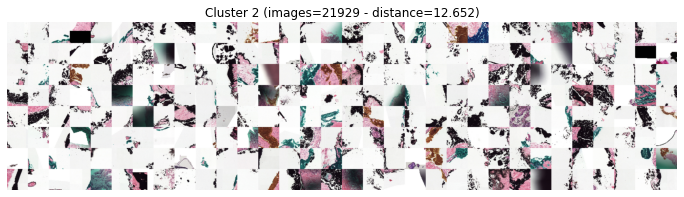
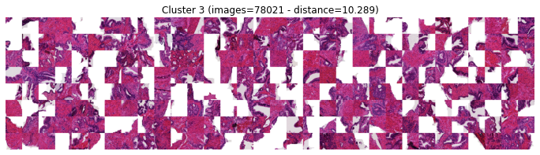
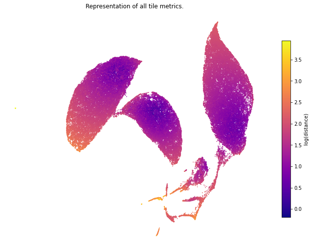

Preprocessing the saved tile images
The example images above were relatively clean, but often slide images contain also regions we are not interested in, such as hairs, air bubbles, pen markings etc. Tile images from these regions should be discarded before passing them to your fantastic neural network.
In this example we'll use the Prostate cANcer graDe Assessment (
PANDA) dataset (publication, kaggle), which has already been cut into tiles. A more thorough example using the PANDA dataset can be found here.
Let's start by combining all metadata.
from histoprep.helpers import combine_metadata
# Let's start by combining all tile_metadata.csv files.
combined = combine_metadata("./PANDA/tiles", "tile_metadata.csv")
print("PANDA dataset has {:.1f} tiles.".format(len(combined)))
Combining metadata: 10615it [05:31]
PANDA dataset has 2.8 million tiles.
Now we have a combined dataframe of 2.8 million tiles from 10 615 prostate biopsy slides. There's bound to be at least a few bad tile images there... Luckily finding them with OutlierDetector and OutlierVisualizer is easy!
from histoprep import OutlierVisualizer
# Let's add an outlier column to the combined metadata.
combined["outlier"] = False
# We'll get a warning due to the size of the data.
visualizer = OutlierVisualizer(combined)
# Let's start by visualising the background column
visualizer.plot_histogram_with_examples("background", num_examples=16)
/data/jopo/HistoPrep/histoprep/_outliers/_visualize.py:41: UserWarning: Plotting functions may take a while due to size of the data.
warnings.warn(

Here we can see that the amount of background set during saving tiles was a bit too high, luvkily we can mark these tiles as outliers! Let's do that and visualise next the gray_mean column.
combined.loc[combined.background > 0.6, "outlier"] = True
# Plot the next column.
visualizer.plot_histogram_with_examples("gray_mean")

We found more outliers! There are many columns in the tile_metadata.csv file, and we could go through all of them, but let's instead try and detect these outliers automatically!
from histoprep import OutlierDetector
detector = OutlierDetector(combined)
print(detector)
OutlierDetector(num_clusters=20):
0: dist=31.48 images=5011
1: dist=15.71 images=14250
2: dist=14.36 images=14374
3: dist=10.36 images=46413
4: dist=9.73 images=58578
5: dist=8.90 images=18104
6: dist=8.74 images=37648
7: dist=8.38 images=18215
8: dist=7.39 images=30246
9: dist=6.86 images=138388
10: dist=5.84 images=322986
...
OutlierDetector performs clustering based on the preprocessing metrics, and orders the clusters from most likely outlier to least likely outlier. Let's inspect the tiles inside the first clusters!
detector.plot_clusters(min_distance=10)




We can see that the first three clusters contain clear outliers and we can mark these easily as outliers! It's also easy to plot a representation of the preprocessing metrics.
# This requires that umap-learn has been installed.
coords, indices = detector.umap_representation(verbose=False)
detector.plot_representation(coords, indices)
